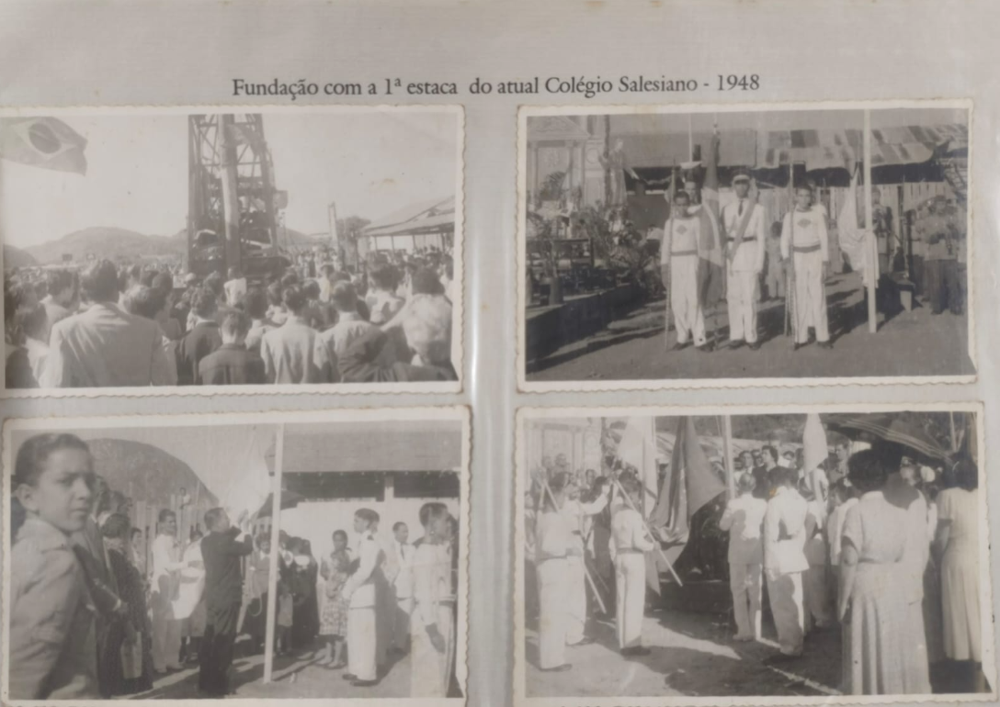
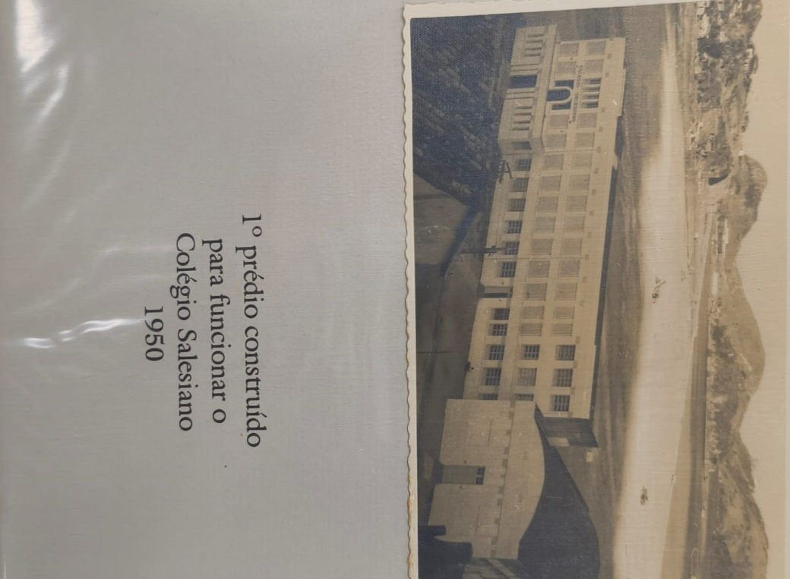
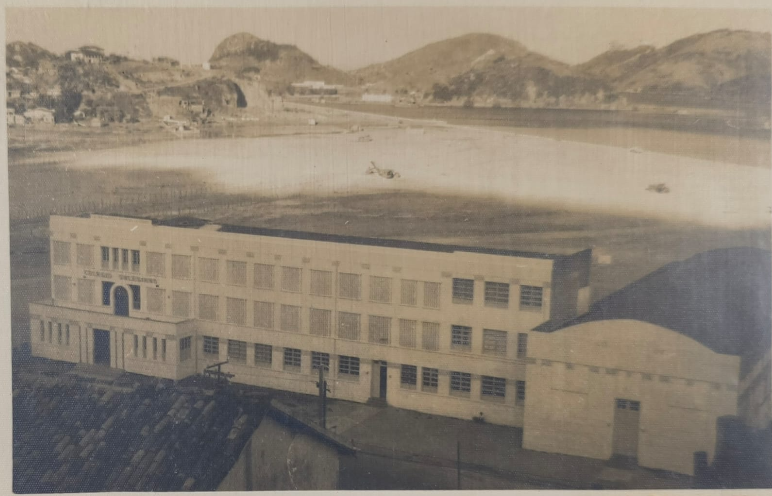
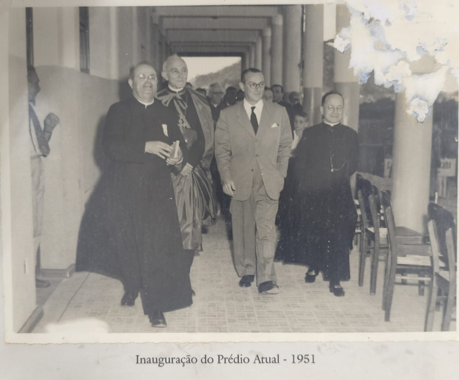
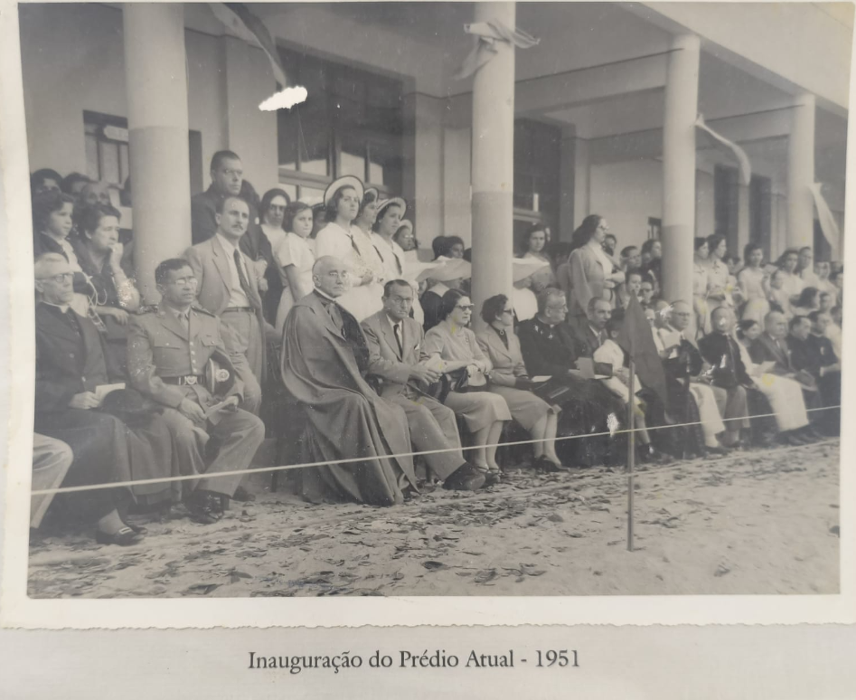
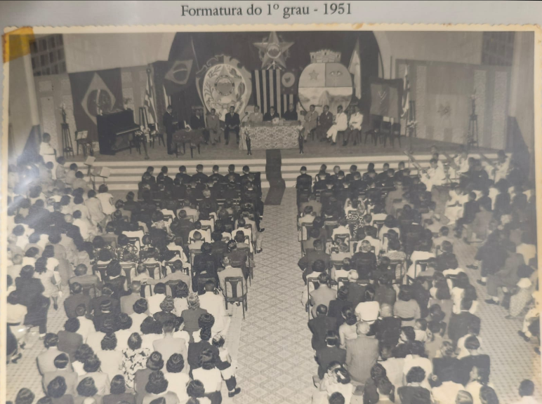

Contribua para Nossa História
Compartilhe suas experiências, fotos e memórias do Colégio Salesiano diretamente no nosso mural colaborativo.

Fundação com a 1ª missa do atual Colégio Salesiano, em 1948.

Primeiro prédio construído para funcionar o Colégio Salesiano, em 1950.

Vista do prédio do Colégio Salesiano junto à baía de Vitória, na década de 1950.

Inauguração do prédio atual do Colégio Salesiano, em 1951.

Solenidade de inauguração do prédio atual do Colégio Salesiano, com autoridades e convidados, em 1951.

Cerimônia de formatura do 1º grau no Colégio Salesiano, em 1951.
Compartilhe suas experiências, fotos e memórias do Colégio Salesiano diretamente no nosso mural colaborativo.
Explore nosso campus através de um tour virtual interativo.

Histórias e memórias de quem fez parte da nossa comunidade educativa.
Depoimentos de ex-alunos, professores e funcionários.